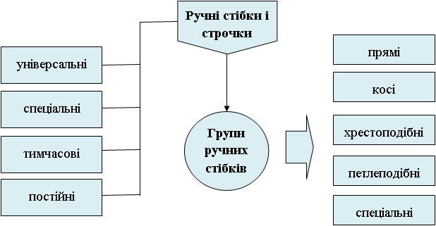

Схематично його можна зобразити так:
Закінчений цикл переплетення ниток на тканині. Довжина стібка складається з довжини лицьової нитки і довжини інтервалу.
Ряд однорідних стібків, що повторюються.
Ними можна виконати ряд різних строчок. Вони бувають: прямі, косі та петлеподібні.
Строчки, виконувані цими стібками, мають в основному тільки одне, цілком визначене призначення. Вони бувають хрестоподіб-ні та петельні.
Після виконання наступних операцій видаляють (зметувальні, виметувальні).
Залишаються (стьобальні, обметувальні, розпушувальні).
Всі стібки мають бути рівними та однорідними, відстань між ними як з лицьового так і з виворітного боку – однаковою, а нитки, затягнуті рівномірно. Розміри та густота стібків можуть бути різними. При визначенні густоти стібків підраховують кількість їх на 1 або на 5 см від строчки.
Кількість ниток, що утворюють стібок, може бути різною.
Можна виділити два основних способи виконання ручних стібків (Рис.6).
При першому способі голку вводять у матеріал і виводять з одного боку, а при другому голку вводять з одного боку деталі, а виводять з протилежного боку.